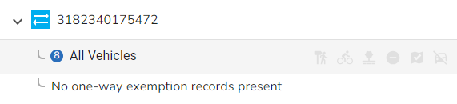

One-way Exemption details |
Top Previous Next |
|
(England & Wales only) One-way Exemptions (Type 16) are used to supply exemptions to a One-way direction for an ESU such as for emergency vehicles. An ESU may have more than one of this type of record or none at all but only if the ESU direction is not Two-Way. This information is displayed when you click on the ESU tab of the Street form. To display the One-way Exemptions for the ESU either click on the > beside the ESU entry, or click on the ESU in the list and select the entry from the list of One-way Exemptions under the ESU information.  TypeThis represents the type of traffic that is exempt from one-way restrictions. Dates StartIf an Exemption is seasonal this is the date when the Exemption Starts. If the Exemption has a specified time period when the Exemption starts then the Time may be specified. EndIf an Exemption is seasonal this is the date when the Exemption Ends. If the Exemption has a specified time period when the Exemption ends then the Time may be specified. PeriodicityThis specifies the periodicity of the restriction. |